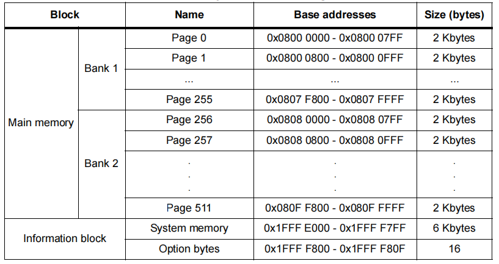

dma+uart
使用dma双缓存和串口实现bootLoader升级.
用到的资源
uart - 通过串口来接收升级文件.dma - 使用dma双缓冲的满中断来接收数据. spi - 使用SPI控制外部flash读写.外部flash - w25q128，升级过程中需要将固件暂存到外部flash.
内部Flash分布图

* stm32f103zet6的flash是512KB，另外STM32的内部flash扇区大小为2KB
| Name |
Address |
Size |
| Bootloader |
0x08000000 - 0x08009FFF |
40KB |
| App size |
0x0800A000 - 0x0800A003 |
4Bytes |
| App crc |
0x0800A004 - 0x0800A005 |
2Bytes |
| Reserve |
0x0800A006 - 0x0800A7FF |
2042Bytes |
| App |
0x0800A800 - 0x0807FFFF |
470KB |
外部flash分布图
| Name |
Address |
Size |
| Font lib |
0x000000 - 0x3FFFFF |
4MB |
| System parameter |
0x400000 - 0x4FFFFF |
1MB |
| App size |
0x500000 - 0x500003 |
4Bytes |
| App & crc |
0x500004 - 0x577FFF |
480KB-4Bytes |
| FATFS |
0x578000 - 0xFFFFFF |
10MB |
升级指令
| Sequence |
Code |
Descriptor |
| 1 |
0xAA |
Head |
| 2 |
0x10 |
Command |
| 3-6 |
0x000000 - 0x75800 |
App size |
| 7-8 |
0x5A 0xA5 |
Tail |
bootloader流程图
主流程
st=>start: 开始:>
e=>end: 结束:>
op1=>operation: 初始化
write_to_flash=>operation: 写入内部flash
staty_at_bootloader=>operation: 停留在bootloader
cond1=>condition: Flash中
APP数据有效:>
cond2=>condition: APP数据
正确:>
jump_to_app=>operation: 跳转到APP
waiting_for_update=>operation: 等待升级
st->op1->cond1
cond1(yes)->write_to_flash->cond2
cond1(no)->staty_at_bootloader->waiting_for_update(down)
cond2(yes)->jump_to_app->e
cond2(no)->staty_at_bootloader->waiting_for_update(down)
升级流程
st=>start: 开始:>
e=>end: 结束:>
initial_uart=>operation: 初始化串口
initial_dma=>operation: 初始化DMA
receive_firmware_data=>operation: 接收升级数据
write_to_flash=>operation: 写入内部flash
cond1=>condition: 收到
升级指令:>
cond2=>condition: APP数据
有效:>
cond3=>condition: APP数据
正确:>
jump_to_app=>operation: 跳转到APP
waiting_for_update=>operation: 等待升级
st->initial_uart->initial_dma->cond1
cond1(yes)->receive_firmware_data->cond2
cond1(no)->cond1
cond2(yes)->write_to_flash->cond3
cond2(no)->cond1
cond3(yes)->jump_to_app->e
cond3(no)->cond1
接收升级数据流程
流程图
st=>start: 开始:>
e=>end: 结束:>
write_to_extflash=>operation: 写入外部flash
set_current_length_max_length=>operation: 设置当前缓存长度为最大缓存长度
set_current_length_actual_length=>operation: 设置当前缓存长度为实际接收长度
dma_full_interrupt=>condition: DMA满中断
exchange_buffer=>operation: 切换缓冲区地址
get_last_buffer=>operation: 获取上一次缓存数据
less_bytes_large_than_receive=>condition: 剩余长度>=
最大缓存字节
st->dma_full_interrupt
dma_full_interrupt(yes)->less_bytes_large_than_receive
dma_full_interrupt(no)->dma_full_interrupt
less_bytes_large_than_receive(yes)->set_current_length_max_length->exchange_buffer->get_last_buffer->write_to_extflash->e
less_bytes_large_than_receive(no)->set_current_length_actual_length->exchange_buffer->get_last_buffer->write_to_extflash->e
代码
static uint8_t currentBuffer[REC_BUFF_SIZE];
static uint8_t buffer_1[REC_BUFF_SIZE];
static uint8_t buffer_2[REC_BUFF_SIZE];
extern uint32_t s_u32_app_total_size;
uint32_t current_flash_address = 0;
deviceaccess_uart_t uart_port1 = {UART_PORT_1,115200,8,uart_rx_handle,NULL};
deviceaccess_dma_t dma_1 = {DMA_ID_1,DMA_CH_5,DMA_TYPE_TC,(uint32_t)buffer_1,(uint32_t)buffer_2,NULL,REC_BUFF_SIZE,dma_event_handle};
static uint32_t current_dma_buffer_length = REC_BUFF_SIZE;
static uint32_t last_dma_buffer_length = REC_BUFF_SIZE;
uint16_t actual_receive_length = 0;
actual_receive_length = current_dma_buffer_length - left_count;
uint32_t i = 0;
uint32_t less_bytes = (CONFIG_EXTFLASH_APP_ADDRESS+s_u32_app_total_size) - (current_flash_address+actual_receive_length);
if(less_bytes >= actual_receive_length)
{
current_dma_buffer_length = actual_receive_length;
}
else
{
current_dma_buffer_length = less_bytes%actual_receive_length;
}
g_deviceaccess_dma_control(&dma_1, CMD_GET_BUFFER,¤t_dma_buffer_length);
if (NULL == dma_1.current_address)
{
return;
}
memset(currentBuffer,0,last_dma_buffer_length);
memcpy(currentBuffer,(void *)dma_1.current_address,last_dma_buffer_length);
last_dma_buffer_length = current_dma_buffer_length;
if (current_flash_address<(CONFIG_EXTFLASH_APP_ADDRESS+s_u32_app_total_size))
{
//add your code write data to flash
current_flash_address = current_flash_address+actual_receive_length;
}
if (current_flash_address >= (CONFIG_EXTFLASH_APP_ADDRESS+s_u32_app_total_size))
{
current_dma_buffer_length = REC_BUFF_SIZE;
last_dma_buffer_length = REC_BUFF_SIZE;
g_deviceaccess_dma_control(&dma_1, CMD_GET_BUFFER,¤t_dma_buffer_length);
USART_DMACmd(USART1, USART_DMAReq_Rx, DISABLE);
USART_ITConfig(USART1, USART_IT_RXNE, ENABLE);
//check firmware data,if correct write the data to flash(internal)
}